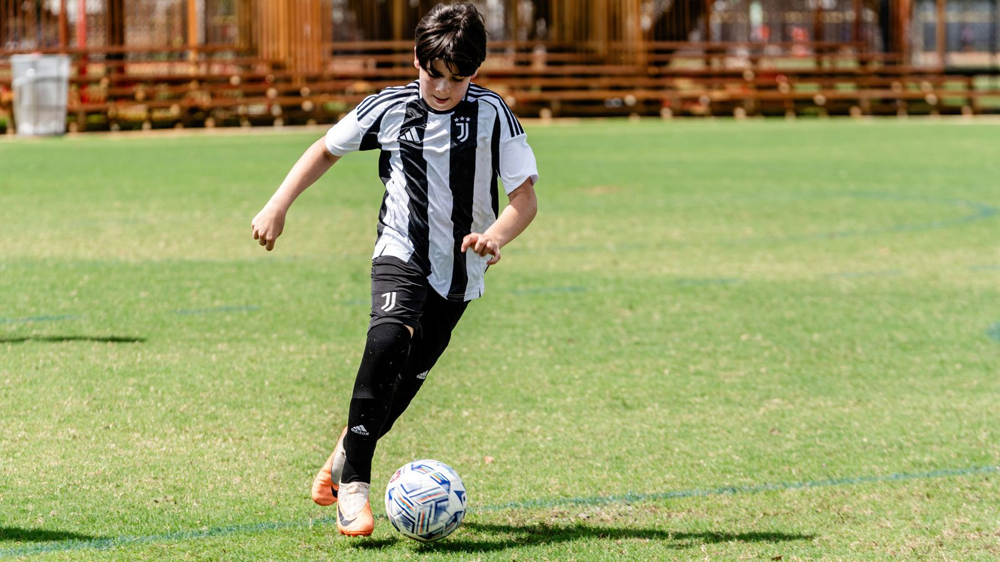

1 · Fondo de la portada: video real en cámara lenta
Hoy

Propuesta
- La foto actual es del archivo de Miami (el nombre del archivo lo dice: bg-tryouts-miami) y es lo primero que ve el padre que llega del anuncio.
- La propuesta es un video real del reel de pretemporada de @jacademylasvegas (16-09-2026): el equipo con el uniforme de Juventus entrenando y la bandera de Juventus en la cancha. Va en cámara lenta, sin sonido y en bucle de 7 segundos, detrás del título.
- No hace la página más lenta: primero carga una imagen fija y el video entra después (1,6 MB en computador y 0,9 MB en celular). Si no carga, queda la imagen.
- Pendiente por confirmar con el equipo de Las Vegas: que la cancha sea de Las Vegas y que ese uniforme blanco siga vigente.
- El video original es vertical, de celular: en celular se ve bien y en computador queda recortado y algo suave. Más adelante se puede reemplazar por una toma horizontal del videógrafo nuevo.
- Se probaron otras dos opciones (los niños del anuncio animados con IA y la foto actual animada); se pueden ver en la demo con el selector de portada.